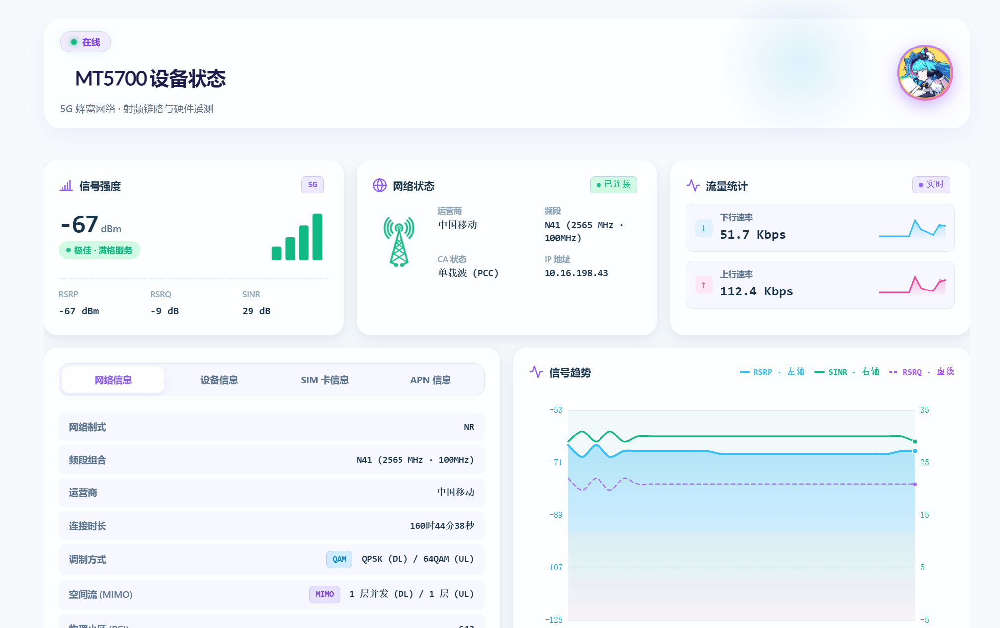
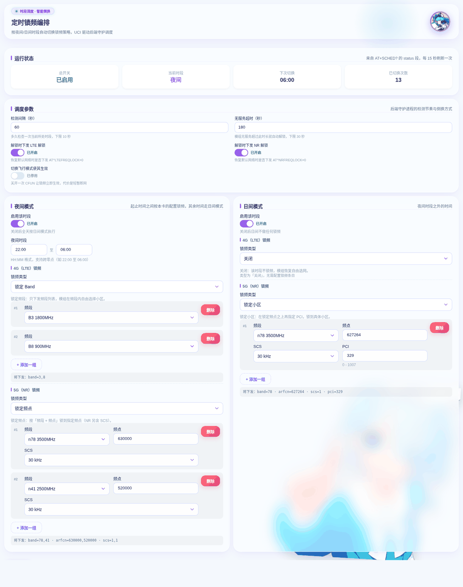
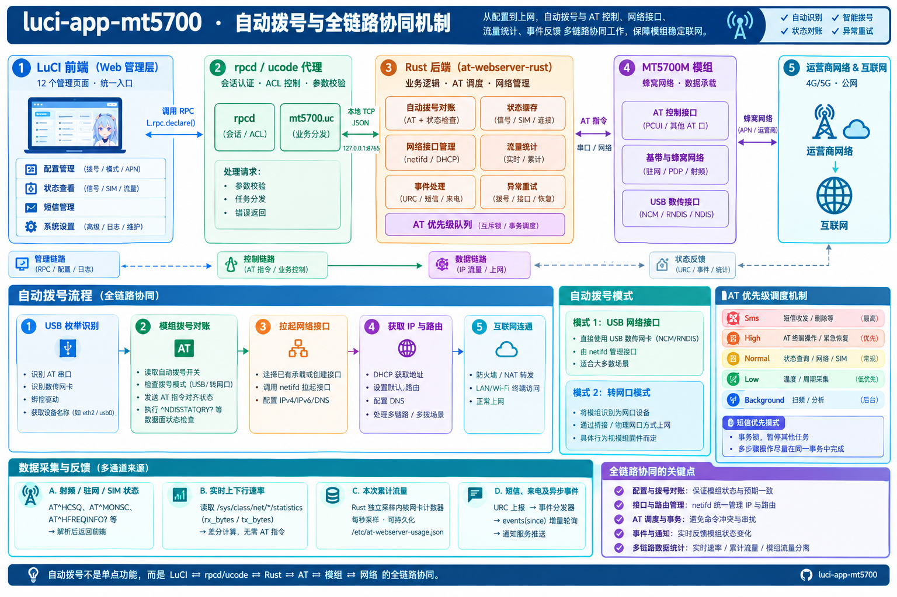
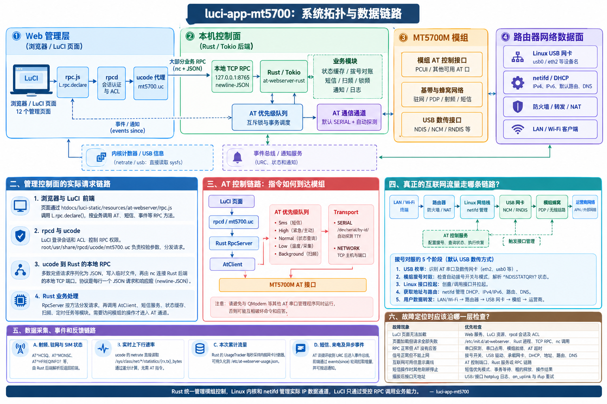

壁纸透视与毛玻璃调节
新一代 MT5700M 5G 模组
全功能现代化管理套件
单包融合交付：集成 12 个原生 LuCI 现代化管理页面 与高性能常驻后端 at-webserver-rust。覆盖全自动拨号对账、网络状态实时看板、全网扫频、智能锁频、短信中心与交互式 AT 终端。
“薄荷正在守护您的 5G 链路哦，当前 RSRP -85dBm，网络超顺畅~”
免部署 · 直接在浏览器体验原生 LuCI
真实呈现软萌二次元玻璃拟物设计系统（Soft Anime Design System），可直接切换各管理视图或向虚拟 AT 终端输入真实指令！
主服务小区 (Pcell) & 载波聚合 (CA)
网络寻址与守护后端对账状态
原生 LuCI 界面实机截图展示
点击任意图片即可全屏大图预览，见证软萌二次元玻璃拟物设计系统与 OpenWrt 主题的优雅融合。

网络状态总控制台
信号场强、双轨速率、载波聚合与芯片结温

定时锁频策略编排
多时段 4G/5G 频段与 PCI 自动防休眠切换

全链路对账与自愈时序
串口独占、NCM 接口对账与主动重拨逻辑

系统拓扑架构图
从 LuCI 视图到硬件模组的全栈调用拓扑
为 MT5700M 5G 模组量身打造的八大核心能力
拒绝拼凑与外部庞大依赖，从底层驱动、串口调度到前端 12 原生视图一气呵成。
单包融合交付
内置 Rust / Tokio 高性能异步事件常驻守护后端，单个 .ipk 或 .apk 开箱即装，无额外 Python / Node 笨重依赖。
全维度 5G 射频监控
精准展示 3GPP 空口场强、RSRP、RSRQ、SINR、下行 256QAM 与 4x4 MIMO 空间流，多载波 CA 聚合看板一目了然。
全链路自动拨号对账
独占式串口防冲突调度，网卡与模组双状态机联动，断网毫秒级主动重拨与自愈对账，彻底告别“假连接”断流。
全网扫频与定时编排
一键遍历周边 NR / LTE 小区 PCI 与频点，独家支持日间高速与夜间基站休眠策略定时自动化编排，网络始终稳定。
7 通道结温物理透视
芯片级硬件温度感知拓扑，基带、主控、PA 功率放大器分段阶梯预警，高温主动调频防护，保障模组长年无故障运转。
原生短信与本地 PDU
纯 Rust 本地 UCS2 与 7-bit 算法编解码，超长短信自动拆分合并拼接，支持中文短信收发、状态回执与安全脱敏。
交互式 Web AT 终端
网页端直接发送 AT 指令，提供指令历史回溯、快捷命令库、防并发撞击锁与超时熔断，调试排障随心所欲。
事件通知与多端告警
断网重拨、IP 变更、SIM 卡异常状态第一时间通过 Telegram Bot、Bark、Server酱、钉钉机器人直达手机。
系统拓扑与数据链路
清晰的三层分工：前端 LuCI 负责展示交互，Rust/Tokio 独占串口调度，Linux 内核网络协议栈负责高速数据通道。
12 个原生现代化页面 (JS / CSS 渲染)
OpenWrt 22.03+ ucode RPC 声明与 ACL 鉴权
Tokio 常驻守护 · 串口独占调度 · PDU 解码
安装与快速上手指南
本插件为 MT5700M 专用拨号套件，直接接管并独占模组串口。使用本插件即可全自动完成拨号，无需安装或运行 QModem。请在安装前卸载或停用其他会占用同一串口的插件。
支持 OpenWrt 24.10 及更早版本（使用 opkg 安装 .ipk），以及 OpenWrt 25.x / ImmortalWrt SNAPSHOT（使用 apk 安装 .apk）。
grep OPENWRT_ARCH /etc/openwrt_release
# 如 aarch64_cortex-a53 或 x86_64
最新版本下载与产物发布
当前版本: preview-v1.30.9-r1 (发布于 GitHub Releases)
aarch64_cortex-a53
适用于 Hiveton H5000M、红米 AX6000、360T7 等 MT798x 架构设备
x86_64 (amd64)
适用于主流 Intel / AMD 架构软路由、PVE 虚拟机及工控主机
at-webserver Debian 版
systemd 独立托管，自带 9000 端口 WebUI 与完整 HTTP API
luci-i18n-mt5700-zh-cn 已包含在 Release 产物中，推荐同时安装。
常见问题与排坑速查
汇总用户常见使用疑问、驱动配置与版本门槛说明
Q1: 为什么不能与 QModem 共存？
答：MT5700M 模组在固件中通常仅提供一个 AT 指令主串口（如 /dev/ttyUSB2）。本插件为了确保信号轮询、温度采集与短信编解码的绝对稳定，会对串口实施严格的独占互斥调度锁。若同时运行 QModem 会引起串口争抢与报文错乱。本插件内置完备的自动拨号机制，无需再安装 QModem。
Q2: 为什么 OpenWrt 21.02 及更早版本无法运行？
答：插件的前端 RPC 桥接基于 rpcd-mod-ucode，该组件自 OpenWrt 22.03 起随系统正式预装。老版本系统缺失 ucode 解释器，装上后会出现“能开页面但所有操作均报 Method not found”。请升级至 OpenWrt 24.10 或 25.x。
Q3: 安装后在串口列表找不到 ttyUSB2？
答：本插件为管理服务，不含底层 Linux 内核驱动。您的路由器固件需要包含 USB 串口驱动（kmod-usb-serial-option）以及网卡驱动（kmod-usb-net-cdc-ncm）。若设备树未识别，模组硬件可能未正常通电。
Q4: 短信发送失败，提示时延超预算？
答：请先检查 SIM 卡是否支持短信收发功能（部分纯物联网流量卡默认被运营商关闭短信功能）。其次检查是否已在“短信设置”中正确配置该 SIM 卡归属运营商的短信中心号码（SMSC），格式需为国际格式（如 +8613800...）。